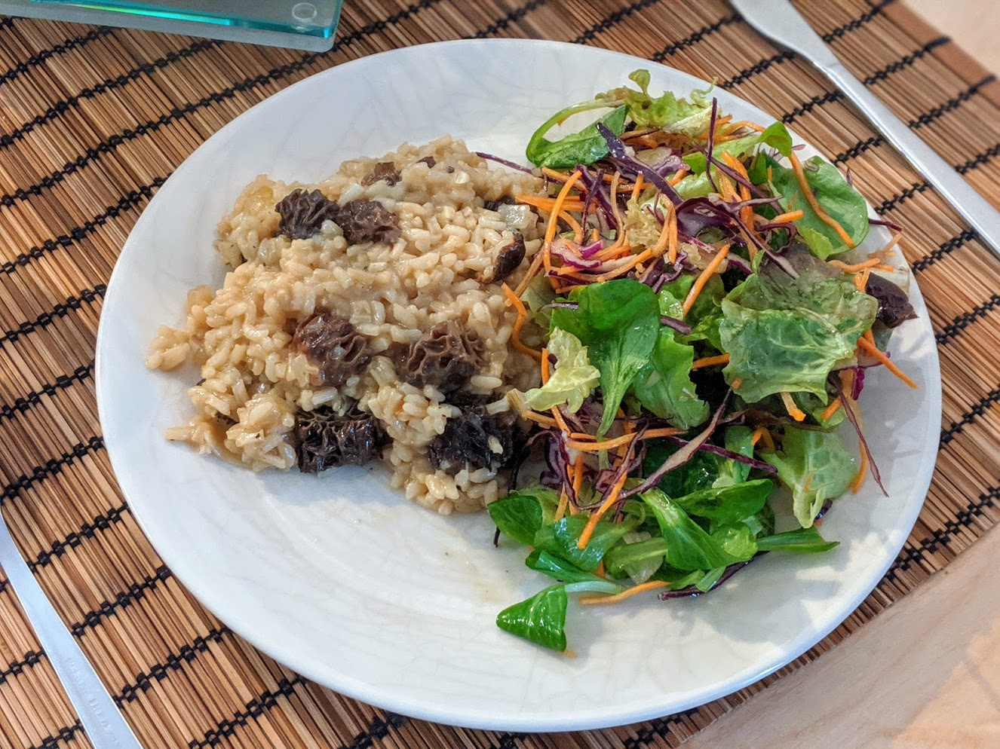

Risotto aux champignons

Ici avec des morilles
Pour six personnes :
- 400g de riz à risotto
- 600g de champignons
- 40cl de vin blanc sec
- Deux cubes de bouillon de légumes
- Deux grosses échalotes
- Un gros oignon
- Deux gousses d'ail
- Pas mal de persil plat (préférablement frais)
- Deux cuillères à soupe de parmesan ou d'emmental râpé
- Huile d'olive, beurre, sel, poivre
- Faire bouillir un litre d'eau et y faire fondre les cubes de bouillon.
- Éplucher et émincer l'oignon, et le faire blondir dans une casserole avec de l'huile d'olive. Pendant ce temps, laver et couper les champignons en morceaux.
- Mettre la moitié des champignons à dorer avec l'oignon. Pendant ce temps, éplucher et écraser l'ail, laver et couper le persil, éplucher et émincer les échalotes.
- Une fois que les champignons sont dorés, ajouter le bouillon, et laisser à feu très doux pour que ça reste chaud.
- Dans une grande poêle, faire chauffer du beurre et de l'huile d'olive à feu moyen-fort, puis ajouter le riz et remuer en permanence jusqu'à ce que ça soit translucide.
- Ajouter le vin blanc, continuer à mélanger jusqu'à ce que tout ait été absorbé.
- Puis, ajouter une louche de bouillon, attendre que tout soit absorbé en remuant de temps en temps, et répéter l'opération jusqu'à ce qu'il ne reste plus de bouillon.
- Un peu avant la fin (lorsqu'il ne reste que deux ou trois louches de bouillon), faire blondir l'échalote et l'ail dans une autre poêle avec un peu de beurre et d'huile d'olive.
- Une fois que c'est bien doré, rajouter la seconde partie des champignons, et lorsqu'ils sont poêlés, les assaisonner et ajouter le persil.
- Assaisonner le risotto à la toute fin, et le servir bien chaud parsemé de fromage râpé et des champignons poêlés.
Remarque : cette recette est stylée. Elle mérite des bons champignons. On peut par exemple en acheter de différents types et la présenter comme « risotto aux trois champignons ». Si on prend une partie de bons champignons (genre des pleurotes ou des chanterelles) et une partie de champignons standards, c'est une bonne idée d'utiliser les standards pour mélanger au bouillon et les plus délicats pour les poêler à la toute fin.
Retour à la liste des recettes